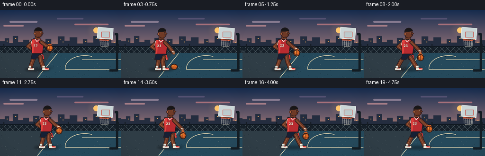
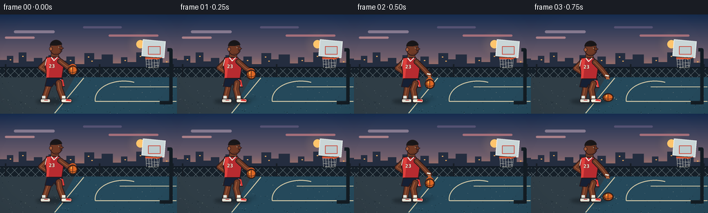

CODING AGENTS AS PIXEL WORLD MODELS
traex/GPT-5.6-Sol · instance_preservation_0034
点击播放 · 原生 RGB 像素
逐轮保存的候选
回放视频、检查图与代码变化。
每份候选均可单独播放。实际图片检查记录在下方工具轨迹中。
候选 01播放与检查图
点击播放 · 原生 RGB 像素


展开代码变化
--- 上一保存版本
+++ 本次保存版本
@@ -0,0 +1,254 @@
+from pathlib import Path
+import json, math
+import numpy as np
+from PIL import Image, ImageDraw, ImageFont, ImageFilter
+import artifact_io
+
+CASE_DIR = Path(__file__).resolve().parent
+SPEC = json.loads((CASE_DIR / "task_spec.json").read_text())
+W, H, N = SPEC["width"], SPEC["height"], SPEC["frames"]
+S = 4
+SW, SH = W*S, H*S
+rng = np.random.default_rng(19)
+
+
+def sc(v):
+ return int(round(v*S))
+
+def pts(seq):
+ return [(sc(x), sc(y)) for x, y in seq]
+
+def ellipse(d, box, fill, outline=None, width=1):
+ d.ellipse(tuple(sc(v) for v in box), fill=fill, outline=outline, width=sc(width) if outline else 1)
+
+def polygon(d, p, fill, outline=None, width=1):
+ p2 = pts(p)
+ d.polygon(p2, fill=fill)
+ if outline:
+ d.line(p2 + [p2[0]], fill=outline, width=sc(width), joint="curve")
+
+def line(d, p, fill, width, joint="curve"):
+ d.line(pts(p), fill=fill, width=sc(width), joint=joint)
+
+def rounded(d, box, radius, fill, outline=None, width=1):
+ d.rounded_rectangle(tuple(sc(v) for v in box), radius=sc(radius), fill=fill,
+ outline=outline, width=sc(width) if outline else 1)
+
+def limb(d, joints, outer, inner, width, highlight=None):
+ line(d, joints, outer, width+2)
+ for x,y in joints:
+ ellipse(d, (x-(width+2)/2, y-(width+2)/2, x+(width+2)/2, y+(width+2)/2), outer)
+ line(d, joints, inner, width)
+ for x,y in joints:
+ ellipse(d, (x-width/2, y-width/2, x+width/2, y+width/2), inner)
+ if highlight:
+ shifted = [(x-0.8, y-0.4) for x,y in joints]
+ line(d, shifted, highlight, max(0.7, width*0.16))
+
+
+def build_background():
+ # Rich dusk gradient.
+ arr = np.zeros((SH, SW, 3), dtype=np.uint8)
+ top = np.array([22, 44, 79.], float)
+ mid = np.array([112, 94, 108.], float)
+ low = np.array([232, 143, 100.], float)
+ for yy in range(SH):
+ y = yy / S
+ if y < 61:
+ a = y/61
+ col = top*(1-a) + mid*a
+ else:
+ a = min(1, (y-61)/35)
+ col = mid*(1-a) + low*a
+ arr[yy, :, :] = col.astype(np.uint8)
+ img = Image.fromarray(arr, "RGB")
+ d = ImageDraw.Draw(img)
+ # Sun glow and sun.
+ glow = Image.new("RGBA", (SW, SH), (0,0,0,0))
+ gd = ImageDraw.Draw(glow)
+ for r, alpha in [(20,10),(15,15),(10,22)]:
+ ellipse(gd, (203-r, 43-r, 203+r, 43+r), (255,190,110,alpha))
+ img = Image.alpha_composite(img.convert("RGBA"), glow.filter(ImageFilter.GaussianBlur(sc(4))))
+ d = ImageDraw.Draw(img)
+ ellipse(d, (197,37,209,49), (255,197,108,235))
+ # Streaked clouds.
+ for box, color in [((20,23,79,27),(133,121,143,90)),((7,32,50,35),(170,128,137,80)),
+ ((120,17,176,20),(85,82,115,80)),((157,29,229,32),(165,111,122,70))]:
+ rounded(d, box, 2, color)
+ # Far skyline.
+ skyline = [(0,76),(0,66),(10,66),(10,60),(19,60),(19,70),(27,70),(27,55),(38,55),
+ (38,68),(49,68),(49,63),(61,63),(61,71),(70,71),(70,59),(83,59),(83,67),
+ (96,67),(96,61),(108,61),(108,72),(122,72),(122,56),(136,56),(136,65),
+ (147,65),(147,58),(163,58),(163,71),(175,71),(175,62),(184,62),(184,69),
+ (197,69),(197,55),(210,55),(210,66),(221,66),(221,59),(235,59),(235,70),
+ (246,70),(246,64),(256,64),(256,83),(0,83)]
+ polygon(d, skyline, (36,45,63,255))
+ # Lit windows.
+ for x,y in [(14,65),(32,60),(75,64),(101,66),(127,61),(132,67),(180,66),(202,60),(225,64),(240,68)]:
+ rounded(d, (x,y,x+2,y+1.2), .3, (237,172,96,130))
+ # Fence base and chain mesh.
+ rounded(d, (0,76,256,99), 0, (21,31,40,160))
+ for x in range(-20,280,12):
+ line(d, [(x,77),(x+22,99)], (104,119,126,115), .55)
+ line(d, [(x+22,77),(x,99)], (104,119,126,115), .55)
+ line(d, [(0,77),(256,77)], (17,25,33,255), 2)
+ line(d, [(0,98),(256,98)], (17,25,33,255), 2)
+ for x in [8,72,144,250]: line(d, [(x,72),(x,102)], (22,29,37,255), 2.2)
+ # Court asphalt and painted blue area.
+ polygon(d, [(0,91),(256,91),(256,144),(0,144)], (47,61,70,255))
+ polygon(d, [(108,91),(256,91),(256,144),(77,144)], (37,73,91,255))
+ # Texture speckles, static and subtle.
+ for _ in range(150):
+ x = float(rng.uniform(0,256)); y = float(rng.uniform(94,144)); r=float(rng.uniform(.12,.35))
+ c = (110,125,126,35) if rng.random()>.5 else (15,30,38,30)
+ ellipse(d, (x-r,y-r,x+r,y+r), c)
+ # Court markings in perspective.
+ line(d, [(79,143),(121,92)], (220,207,170,210), 1.15)
+ line(d, [(255,126),(138,126)], (220,207,170,210), 1.15)
+ line(d, [(255,105),(173,105)], (220,207,170,180), 1)
+ # Free throw arc.
+ d.arc((sc(137),sc(96),sc(221),sc(151)), 174, 291, fill=(220,207,170,210), width=sc(1.15))
+ # Hoop support, backboard, rim and net.
+ line(d, [(242,51),(247,51),(247,130)], (19,28,35,255), 5)
+ line(d, [(247,128),(231,128)], (19,28,35,255), 5)
+ # Backboard glow/shadow.
+ polygon(d, [(207,36),(239,39),(237,63),(205,60)], (202,214,215,210), (235,241,238,240), 1)
+ rounded(d, (214,46,232,58), .5, (188,203,205,75), (202,72,60,240), 1)
+ line(d, [(209,62),(232,63)], (38,35,31,255), 2)
+ line(d, [(210,63),(230,64)], (229,88,52,255), 2.2)
+ line(d, [(229,64),(234,62)], (229,88,52,255), 1.2)
+ # Net.
+ for x in [211,215,219,223,227,230]:
+ line(d, [(x,65),(x+(.5 if x%2 else -1),77)], (221,220,207,185), .55)
+ line(d, [(211,68),(230,70),(212,72),(229,74),(214,77),(227,77)], (221,220,207,150), .5)
+ return img.convert("RGB")
+
+BACKGROUND = build_background()
+
+try:
+ NUM_FONT = ImageFont.truetype("/usr/share/fonts/truetype/dejavu/DejaVuSansCondensed-Bold.ttf", sc(7))
+except OSError:
+ NUM_FONT = ImageFont.load_default()
+
+
+def draw_player(img, idx):
+ d = ImageDraw.Draw(img, "RGBA")
+ t = idx / (N-1)
+ phase = (idx % 6) / 6.0
+ # Walks steadily to the basket; tiny vertical rhythm keeps mass believable.
+ x = 76 + 1.72*idx
+ bob = -1.15 * (0.5 + 0.5*math.cos(2*math.pi*phase))
+ gait = math.sin(2*math.pi*(idx/10.0))
+ # Ball acceleration down and easing up.
+ hand_level, floor = 82+bob, 120.2
+ if phase <= .5:
+ q = phase/.5
+ ball_y = hand_level + (floor-hand_level)*(q**1.72)
+ else:
+ q = (phase-.5)/.5
+ ball_y = floor - (floor-hand_level)*(q**0.70)
+ ball_x = x + 29 + 1.2*math.sin(math.pi*phase)
+ near_impact = abs(phase-.5) < .09
+ # Contact shadow under athlete and ball.
+ shadow = Image.new("RGBA", img.size, (0,0,0,0)); sd=ImageDraw.Draw(shadow,"RGBA")
+ ellipse(sd, (x-24,122,x+29,130), (8,13,17,100))
+ ellipse(sd, (ball_x-8,121,ball_x+8,124), (5,10,13,105 if near_impact else 45))
+ shadow = shadow.filter(ImageFilter.GaussianBlur(sc(2.2)))
+ img.alpha_composite(shadow)
+ d = ImageDraw.Draw(img, "RGBA")
+
+ outline=(40,24,26,255); skin=(111,58,38,255); skin_hi=(162,91,57,255); skin_light=(190,111,69,255)
+ navy=(22,32,52,255); navy_hi=(39,51,77,255); red=(184,43,48,255); red_hi=(224,61,57,255)
+ white=(239,237,222,255)
+ hip_y=95+bob
+ # Rear leg.
+ rk=(x-7+gait*4.4,108+bob); ra=(x-13+gait*7.5,124)
+ limb(d, [(x-2,hip_y),(rk[0],rk[1]),(ra[0],ra[1])], outline, skin, 7, skin_hi)
+ # Rear sock and shoe.
+ line(d, [(ra[0],118),(ra[0],125)], (224,226,218,255), 5)
+ rounded(d, (ra[0]-5,122,ra[0]+10,128), 2.3, (226,224,211,255), (39,31,33,255), 1)
+ line(d, [(ra[0]+1,124),(ra[0]+6,124)], (186,52,52,255), .9)
+ # Far arm is visible behind the jersey, bent forward.
+ limb(d, [(x-7,68+bob),(x-17,78+bob),(x-5,86+bob)], outline, skin, 6, skin_hi)
+ # Neck.
+ polygon(d, [(x-2,56+bob),(x+8,56+bob),(x+10,68+bob),(x-3,68+bob)], skin, outline, .8)
+ # Torso jersey silhouette, athletic taper.
+ torso=[(x-9,63+bob),(x+10,63+bob),(x+16,76+bob),(x+13,96+bob),(x-7,96+bob),(x-11,75+bob)]
+ polygon(d, torso, red, outline, 1.2)
+ polygon(d, [(x-8,64+bob),(x-3,63+bob),(x-6,94+bob),(x-9,93+bob)], (225,65,61,220))
+ # White collar and armhole trim.
+ line(d, [(x-2,63+bob),(x+2,68+bob),(x+7,63+bob)], white, 1.4)
+ line(d, [(x+9,65+bob),(x+14,74+bob)], white, 1.25)
+ line(d, [(x-9,66+bob),(x-11,75+bob)], white, 1.1)
+ # Jersey number.
+ number_layer=Image.new("RGBA", img.size,(0,0,0,0)); nd=ImageDraw.Draw(number_layer)
+ nd.text((sc(x-1),sc(72+bob)), "23", font=NUM_FONT, anchor="ma", fill=(245,238,214,245), stroke_width=sc(.25), stroke_fill=(80,20,25,230))
+ img.alpha_composite(number_layer)
+ d=ImageDraw.Draw(img,"RGBA")
+ # Shorts with red/white piping.
+ polygon(d, [(x-8,93+bob),(x+14,93+bob),(x+17,106+bob),(x+6,106+bob),(x+2,101+bob),(x-1,106+bob),(x-11,105+bob)], navy, outline, 1.1)
+ polygon(d, [(x+12,95+bob),(x+15,96+bob),(x+17,105+bob),(x+14,105+bob)], red_hi)
+ line(d, [(x+11,95+bob),(x+14,105+bob)], white, .8)
+ # Front leg.
+ fk=(x+10-gait*4.4,109+bob); fa=(x+16-gait*7.5,124)
+ limb(d, [(x+9,hip_y+5),(fk[0],fk[1]),(fa[0],fa[1])], outline, skin, 7.4, skin_hi)
+ line(d, [(fa[0],118),(fa[0],125)], white, 5.2)
+ rounded(d, (fa[0]-4,122,fa[0]+12,128), 2.4, (242,238,220,255), (39,31,33,255), 1)
+ polygon(d, [(fa[0]+4,122.5),(fa[0]+10,123.5),(fa[0]+11,126),(fa[0]+3,125.2)], red_hi)
+ # Head in profile, nose points toward hoop.
+ ellipse(d, (x-4,41+bob,x+14,60+bob), outline)
+ ellipse(d, (x-3,41+bob,x+13,59+bob), skin)
+ polygon(d, [(x+10,47+bob),(x+16,50+bob),(x+11,53+bob)], skin, outline, .65)
+ ellipse(d, (x-5,48+bob,x,54+bob), skin_hi, outline, .7)
+ # Hair and close fade.
+ d.pieslice((sc(x-4),sc(38+bob),sc(x+14),sc(55+bob)), 181, 349, fill=(28,24,25,255))
+ polygon(d, [(x-3,43+bob),(x,40+bob),(x+9,40+bob),(x+13,44+bob),(x+10,45+bob),(x+3,43+bob)], (23,22,24,255))
+ # Face details.
+ ellipse(d, (x+8.5,48+bob,x+9.8,49.2+bob), (245,226,190,255))
+ ellipse(d, (x+9,48.1+bob,x+9.6,48.8+bob), (18,16,15,255))
+ line(d, [(x+10,55+bob),(x+14,54.5+bob)], (50,25,24,255), .7)
+ line(d, [(x+3,58+bob),(x+11,57+bob)], (65,31,28,150), .8)
+ # Front arm reaches down to control ball. Hand tracks bounce modestly.
+ hand_y = 78+bob + 12*math.sin(math.pi*phase)**1.25
+ shoulder=(x+11,69+bob); elbow=(x+21.5,77+bob+3*math.sin(math.pi*phase)); hand=(ball_x-1,hand_y)
+ limb(d, [shoulder,elbow,hand], outline, skin, 6.3, skin_hi)
+ # Wrist band and spread fingers.
+ line(d, [(hand[0]-3,hand[1]-2),(hand[0]+2,hand[1]-1)], white, 2)
+ for off in [-2,0,2]:
+ line(d, [(hand[0]+off*.5,hand[1]+1),(ball_x+off,hand[1]+4)], skin_light, 1.15)
+ # Ball motion ghost kept extremely subtle, mostly visible during fast travel.
+ speed_alpha = int(22 * abs(math.cos(math.pi*phase)))
+ if speed_alpha:
+ ellipse(d, (ball_x-5.5,ball_y-9,ball_x+5.5,ball_y+2), (216,92,35,speed_alpha))
+ # Basketball, slightly squashed at court impact.
+ brx=6.2*(1.12 if near_impact else 1); bry=6.2*(.84 if near_impact else 1)
+ ellipse(d, (ball_x-brx-1,ball_y-bry-1,ball_x+brx+1,ball_y+bry+1), (45,27,23,180))
+ ellipse(d, (ball_x-brx,ball_y-bry,ball_x+brx,ball_y+bry), (221,103,36,255), (77,39,26,255), .8)
+ # Ball highlight and signature channels.
+ ellipse(d, (ball_x-3.6,ball_y-3.7,ball_x-1.2,ball_y-1.2), (255,173,75,205))
+ line(d, [(ball_x,ball_y-bry),(ball_x,ball_y+bry)], (66,37,27,255), .65)
+ d.arc((sc(ball_x-brx),sc(ball_y-bry*.55),sc(ball_x+brx),sc(ball_y+bry*.55)), 0, 180, fill=(66,37,27,255), width=sc(.65))
+ d.arc((sc(ball_x-brx*.72),sc(ball_y-bry),sc(ball_x+brx*.72),sc(ball_y+bry)), 78, 280, fill=(66,37,27,255), width=sc(.65))
+ # Tiny impact dust/sweat flecks at bounce, fixed around contact.
+ if near_impact:
+ for ox,oy in [(-9,1),(9,0),(-13,-1),(12,2)]:
+ ellipse(d, (ball_x+ox-.7,121+oy-.35,ball_x+ox+.7,121+oy+.35), (207,194,157,120))
+
+
+def render_frame(i):
+ img = BACKGROUND.convert("RGBA")
+ draw_player(img, i)
+ # Soft cinematic vignette.
+ yy, xx = np.mgrid[0:SH, 0:SW]
+ cx,cy=SW*.50,SH*.48
+ dist=((xx-cx)/(SW*.72))**2+((yy-cy)/(SH*.85))**2
+ alpha=np.clip((dist-.42)*34,0,27).astype(np.uint8)
+ vig=Image.fromarray(np.dstack([np.zeros_like(alpha),np.zeros_like(alpha),np.zeros_like(alpha),alpha]),"RGBA")
+ img=Image.alpha_composite(img,vig)
+ img=img.convert("RGB").resize((W,H),Image.Resampling.LANCZOS)
+ return np.asarray(img,dtype=np.uint8)
+
+frames=np.stack([render_frame(i) for i in range(N)],axis=0)
+assert frames.shape==(N,H,W,3) and frames.dtype==np.uint8
+artifact_io.save(frames, CASE_DIR)
+print(f"saved {N} RGB frames at {W}x{H}; range={frames.min()}..{frames.max()}")
可观测工具轨迹
实际执行的命令与返回图片。
命令 1exit 0
/bin/bash -lc "cat prompt.txt && printf '\\n--- GENERATION_RULES.md ---\\n' && cat GENERATION_RULES.md"
命令 2exit 0
/bin/bash -lc "printf '%s\\n' '--- task_spec.json ---' && cat task_spec.json && printf '%s\\n' '--- files ---' && find . -maxdepth 2 -type f -printf '%p\\n' | sort"
命令 3exit 0
/bin/bash -lc "sed -n '1,240p' artifact_io.py"
命令 4exit 0
/bin/bash -lc "cat > generate.py <<'PY'
from pathlib import Path
import json, math
import numpy as np
from PIL import Image, ImageDraw, ImageFont, ImageFilter
import artifact_io
CASE_DIR = Path(__file__).resolve().parent
SPEC = json.loads((CASE_DIR / \"task_spec.json\").read_text())
W, H, N = SPEC[\"width\"], SPEC[\"height\"], SPEC[\"frames\"]
S = 4
SW, SH = W*S, H*S
rng = np.random.default_rng(19)
def sc(v):
return int(round(v*S))
def pts(seq):
return [(sc(x), sc(y)) for x, y in seq]
def ellipse(d, box, fill, outline=None, width=1):
d.ellipse(tuple(sc(v) for v in box), fill=fill, outline=outline, width=sc(width) if outline else 1)
def polygon(d, p, fill, outline=None, width=1):
p2 = pts(p)
d.polygon(p2, fill=fill)
if outline:
d.line(p2 + [p2[0]], fill=outline, width=sc(width), joint=\"curve\")
def line(d, p, fill, width, joint=\"curve\"):
d.line(pts(p), fill=fill, width=sc(width), joint=joint)
def rounded(d, box, radius, fill, outline=None, width=1):
d.rounded_rectangle(tuple(sc(v) for v in box), radius=sc(radius), fill=fill,
outline=outline, width=sc(width) if outline else 1)
def limb(d, joints, outer, inner, width, highlight=None):
line(d, joints, outer, width+2)
for x,y in joints:
ellipse(d, (x-(width+2)/2, y-(width+2)/2, x+(width+2)/2, y+(width+2)/2), outer)
line(d, joints, inner, width)
for x,y in joints:
ellipse(d, (x-width/2, y-width/2, x+width/2, y+width/2), inner)
if highlight:
shifted = [(x-0.8, y-0.4) for x,y in joints]
line(d, shifted, highlight, max(0.7, width*0.16))
def build_background():
# Rich dusk gradient.
arr = np.zeros((SH, SW, 3), dtype=np.uint8)
top = np.array([22, 44, 79.], float)
mid = np.array([112, 94, 108.], float)
low = np.array([232, 143, 100.], float)
for yy in range(SH):
y = yy / S
if y < 61:
a = y/61
col = top*(1-a) + mid*a
else:
a = min(1, (y-61)/35)
col = mid*(1-a) + low*a
arr[yy, :, :] = col.astype(np.uint8)
img = Image.fromarray(arr, \"RGB\")
d = ImageDraw.Draw(img)
# Sun glow and sun.
glow = Image.new(\"RGBA\", (SW, SH), (0,0,0,0))
gd = ImageDraw.Draw(glow)
for r, alpha in [(20,10),(15,15),(10,22)]:
ellipse(gd, (203-r, 43-r, 203+r, 43+r), (255,190,110,alpha))
img = Image.alpha_composite(img.convert(\"RGBA\"), glow.filter(ImageFilter.GaussianBlur(sc(4))))
d = ImageDraw.Draw(img)
ellipse(d, (197,37,209,49), (255,197,108,235))
# Streaked clouds.
for box, color in [((20,23,79,27),(133,121,143,90)),((7,32,50,35),(170,128,137,80)),
((120,17,176,20),(85,82,115,80)),((157,29,229,32),(165,111,122,70))]:
rounded(d, box, 2, color)
# Far skyline.
skyline = [(0,76),(0,66),(10,66),(10,60),(19,60),(19,70),(27,70),(27,55),(38,55),
(38,68),(49,68),(49,63),(61,63),(61,71),(70,71),(70,59),(83,59),(83,67),
(96,67),(96,61),(108,61),(108,72),(122,72),(122,56),(136,56),(136,65),
(147,65),(147,58),(163,58),(163,71),(175,71),(175,62),(184,62),(184,69),
(197,69),(197,55),(210,55),(210,66),(221,66),(221,59),(235,59),(235,70),
(246,70),(246,64),(256,64),(256,83),(0,83)]
polygon(d, skyline, (36,45,63,255))
# Lit windows.
for x,y in [(14,65),(32,60),(75,64),(101,66),(127,61),(132,67),(180,66),(202,60),(225,64),(240,68)]:
rounded(d, (x,y,x+2,y+1.2), .3, (237,172,96,130))
# Fence base and chain mesh.
rounded(d, (0,76,256,99), 0, (21,31,40,160))
for x in range(-20,280,12):
line(d, [(x,77),(x+22,99)], (104,119,126,115), .55)
line(d, [(x+22,77),(x,99)], (104,119,126,115), .55)
line(d, [(0,77),(256,77)], (17,25,33,255), 2)
line(d, [(0,98),(256,98)], (17,25,33,255), 2)
for x in [8,72,144,250]: line(d, [(x,72),(x,102)], (22,29,37,255), 2.2)
# Court asphalt and painted blue area.
polygon(d, [(0,91),(256,91),(256,144),(0,144)], (47,61,70,255))
polygon(d, [(108,91),(256,91),(256,144),(77,144)], (37,73,91,255))
# Texture speckles, static and subtle.
for _ in range(150):
x = float(rng.uniform(0,256)); y = float(rng.uniform(94,144)); r=float(rng.uniform(.12,.35))
c = (110,125,126,35) if rng.random()>.5 else (15,30,38,30)
ellipse(d, (x-r,y-r,x+r,y+r), c)
# Court markings in perspective.
line(d, [(79,143),(121,92)], (220,207,170,210), 1.15)
line(d, [(255,126),(138,126)], (220,207,170,210), 1.15)
line(d, [(255,105),(173,105)], (220,207,170,180), 1)
# Free throw arc.
d.arc((sc(137),sc(96),sc(221),sc(151)), 174, 291, fill=(220,207,170,210), width=sc(1.15))
# Hoop support, backboard, rim and net.
line(d, [(242,51),(247,51),(247,130)], (19,28,35,255), 5)
line(d, [(247,128),(231,128)], (19,28,35,255), 5)
# Backboard glow/shadow.
polygon(d, [(207,36),(239,39),(237,63),(205,60)], (202,214,215,210), (235,241,238,240), 1)
rounded(d, (214,46,232,58), .5, (188,203,205,75), (202,72,60,240), 1)
line(d, [(209,62),(232,63)], (38,35,31,255), 2)
line(d, [(210,63),(230,64)], (229,88,52,255), 2.2)
line(d, [(229,64),(234,62)], (229,88,52,255), 1.2)
# Net.
for x in [211,215,219,223,227,230]:
line(d, [(x,65),(x+(.5 if x%2 else -1),77)], (221,220,207,185), .55)
line(d, [(211,68),(230,70),(212,72),(229,74),(214,77),(227,77)], (221,220,207,150), .5)
return img.convert(\"RGB\")
BACKGROUND = build_background()
try:
NUM_FONT = ImageFont.truetype(\"/usr/share/fonts/truetype/dejavu/DejaVuSansCondensed-Bold.ttf\", sc(7))
except OSError:
NUM_FONT = ImageFont.load_default()
def draw_player(img, idx):
d = ImageDraw.Draw(img, \"RGBA\")
t = idx / (N-1)
phase = (idx % 6) / 6.0
# Walks steadily to the basket; tiny vertical rhythm keeps mass believable.
x = 76 + 1.72*idx
bob = -1.15 * (0.5 + 0.5*math.cos(2*math.pi*phase))
gait = math.sin(2*math.pi*(idx/10.0))
# Ball acceleration down and easing up.
hand_level, floor = 82+bob, 120.2
if phase <= .5:
q = phase/.5
ball_y = hand_level + (floor-hand_level)*(q**1.72)
else:
q = (phase-.5)/.5
ball_y = floor - (floor-hand_level)*(q**0.70)
ball_x = x + 29 + 1.2*math.sin(math.pi*phase)
near_impact = abs(phase-.5) < .09
# Contact shadow under athlete and ball.
shadow = Image.new(\"RGBA\", img.size, (0,0,0,0)); sd=ImageDraw.Draw(shadow,\"RGBA\")
ellipse(sd, (x-24,122,x+29,130), (8,13,17,100))
ellipse(sd, (ball_x-8,121,ball_x+8,124), (5,10,13,105 if near_impact else 45))
shadow = shadow.filter(ImageFilter.GaussianBlur(sc(2.2)))
img.alpha_composite(shadow)
d = ImageDraw.Draw(img, \"RGBA\")
outline=(40,24,26,255); skin=(111,58,38,255); skin_hi=(162,91,57,255); skin_light=(190,111,69,255)
navy=(22,32,52,255); navy_hi=(39,51,77,255); red=(184,43,48,255); red_hi=(224,61,57,255)
white=(239,237,222,255)
hip_y=95+bob
# Rear leg.
rk=(x-7+gait*4.4,108+bob); ra=(x-13+gait*7.5,124)
limb(d, [(x-2,hip_y),(rk[0],rk[1]),(ra[0],ra[1])], outline, skin, 7, skin_hi)
# Rear sock and shoe.
line(d, [(ra[0],118),(ra[0],125)], (224,226,218,255), 5)
rounded(d, (ra[0]-5,122,ra[0]+10,128), 2.3, (226,224,211,255), (39,31,33,255), 1)
line(d, [(ra[0]+1,124),(ra[0]+6,124)], (186,52,52,255), .9)
# Far arm is visible behind the jersey, bent forward.
limb(d, [(x-7,68+bob),(x-17,78+bob),(x-5,86+bob)], outline, skin, 6, skin_hi)
# Neck.
polygon(d, [(x-2,56+bob),(x+8,56+bob),(x+10,68+bob),(x-3,68+bob)], skin, outline, .8)
# Torso jersey silhouette, athletic taper.
torso=[(x-9,63+bob),(x+10,63+bob),(x+16,76+bob),(x+13,96+bob),(x-7,96+bob),(x-11,75+bob)]
polygon(d, torso, red, outline, 1.2)
polygon(d, [(x-8,64+bob),(x-3,63+bob),(x-6,94+bob),(x-9,93+bob)], (225,65,61,220))
# White collar and armhole trim.
line(d, [(x-2,63+bob),(x+2,68+bob),(x+7,63+bob)], white, 1.4)
line(d, [(x+9,65+bob),(x+14,74+bob)], white, 1.25)
line(d, [(x-9,66+bob),(x-11,75+bob)], white, 1.1)
# Jersey number.
number_layer=Image.new(\"RGBA\", img.size,(0,0,0,0)); nd=ImageDraw.Draw(number_layer)
nd.text((sc(x-1),sc(72+bob)), \"23\", font=NUM_FONT, anchor=\"ma\", fill=(245,238,214,245), stroke_width=sc(.25), stroke_fill=(80,20,25,230))
img.alpha_composite(number_layer)
d=ImageDraw.Draw(img,\"RGBA\")
# Shorts with red/white piping.
polygon(d, [(x-8,93+bob),(x+14,93+bob),(x+17,106+bob),(x+6,106+bob),(x+2,101+bob),(x-1,106+bob),(x-11,105+bob)], navy, outline, 1.1)
polygon(d, [(x+12,95+bob),(x+15,96+bob),(x+17,105+bob),(x+14,105+bob)], red_hi)
line(d, [(x+11,95+bob),(x+14,105+bob)], white, .8)
# Front leg.
fk=(x+10-gait*4.4,109+bob); fa=(x+16-gait*7.5,124)
limb(d, [(x+9,hip_y+5),(fk[0],fk[1]),(fa[0],fa[1])], outline, skin, 7.4, skin_hi)
line(d, [(fa[0],118),(fa[0],125)], white, 5.2)
rounded(d, (fa[0]-4,122,fa[0]+12,128), 2.4, (242,238,220,255), (39,31,33,255), 1)
polygon(d, [(fa[0]+4,122.5),(fa[0]+10,123.5),(fa[0]+11,126),(fa[0]+3,125.2)], red_hi)
# Head in profile, nose points toward hoop.
ellipse(d, (x-4,41+bob,x+14,60+bob), outline)
ellipse(d, (x-3,41+bob,x+13,59+bob), skin)
polygon(d, [(x+10,47+bob),(x+16,50+bob),(x+11,53+bob)], skin, outline, .65)
ellipse(d, (x-5,48+bob,x,54+bob), skin_hi, outline, .7)
# Hair and close fade.
d.pieslice((sc(x-4),sc(38+bob),sc(x+14),sc(55+bob)), 181, 349, fill=(28,24,25,255))
polygon(d, [(x-3,43+bob),(x,40+bob),(x+9,40+bob),(x+13,44+bob),(x+10,45+bob),(x+3,43+bob)], (23,22,24,255))
# Face details.
ellipse(d, (x+8.5,48+bob,x+9.8,49.2+bob), (245,226,190,255))
ellipse(d, (x+9,48.1+bob,x+9.6,48.8+bob), (18,16,15,255))
line(d, [(x+10,55+bob),(x+14,54.5+bob)], (50,25,24,255), .7)
line(d, [(x+3,58+bob),(x+11,57+bob)], (65,31,28,150), .8)
# Front arm reaches down to control ball. Hand tracks bounce modestly.
hand_y = 78+bob + 12*math.sin(math.pi*phase)**1.25
shoulder=(x+11,69+bob); elbow=(x+21.5,77+bob+3*math.sin(math.pi*phase)); hand=(ball_x-1,hand_y)
limb(d, [shoulder,elbow,hand], outline, skin, 6.3, skin_hi)
# Wrist band and spread fingers.
line(d, [(hand[0]-3,hand[1]-2),(hand[0]+2,hand[1]-1)], white, 2)
for off in [-2,0,2]:
line(d, [(hand[0]+off*.5,hand[1]+1),(ball_x+off,hand[1]+4)], skin_light, 1.15)
# Ball motion ghost kept extremely subtle, mostly visible during fast travel.
speed_alpha = int(22 * abs(math.cos(math.pi*phase)))
if speed_alpha:
ellipse(d, (ball_x-5.5,ball_y-9,ball_x+5.5,ball_y+2), (216,92,35,speed_alpha))
# Basketball, slightly squashed at court impact.
brx=6.2*(1.12 if near_impact else 1); bry=6.2*(.84 if near_impact else 1)
ellipse(d, (ball_x-brx-1,ball_y-bry-1,ball_x+brx+1,ball_y+bry+1), (45,27,23,180))
ellipse(d, (ball_x-brx,ball_y-bry,ball_x+brx,ball_y+bry), (221,103,36,255), (77,39,26,255), .8)
# Ball highlight and signature channels.
ellipse(d, (ball_x-3.6,ball_y-3.7,ball_x-1.2,ball_y-1.2), (255,173,75,205))
line(d, [(ball_x,ball_y-bry),(ball_x,ball_y+bry)], (66,37,27,255), .65)
d.arc((sc(ball_x-brx),sc(ball_y-bry*.55),sc(ball_x+brx),sc(ball_y+bry*.55)), 0, 180, fill=(66,37,27,255), width=sc(.65))
d.arc((sc(ball_x-brx*.72),sc(ball_y-bry),sc(ball_x+brx*.72),sc(ball_y+bry)), 78, 280, fill=(66,37,27,255), width=sc(.65))
# Tiny impact dust/sweat flecks at bounce, fixed around contact.
if near_impact:
for ox,oy in [(-9,1),(9,0),(-13,-1),(12,2)]:
ellipse(d, (ball_x+ox-.7,121+oy-.35,ball_x+ox+.7,121+oy+.35), (207,194,157,120))
def render_frame(i):
img = BACKGROUND.convert(\"RGBA\")
draw_player(img, i)
# Soft cinematic vignette.
yy, xx = np.mgrid[0:SH, 0:SW]
cx,cy=SW*.50,SH*.48
dist=((xx-cx)/(SW*.72))**2+((yy-cy)/(SH*.85))**2
alpha=np.clip((dist-.42)*34,0,27).astype(np.uint8)
vig=Image.fromarray(np.dstack([np.zeros_like(alpha),np.zeros_like(alpha),np.zeros_like(alpha),alpha]),\"RGBA\")
img=Image.alpha_composite(img,vig)
img=img.convert(\"RGB\").resize((W,H),Image.Resampling.LANCZOS)
return np.asarray(img,dtype=np.uint8)
frames=np.stack([render_frame(i) for i in range(N)],axis=0)
assert frames.shape==(N,H,W,3) and frames.dtype==np.uint8
artifact_io.save(frames, CASE_DIR)
print(f\"saved {N} RGB frames at {W}x{H}; range={frames.min()}..{frames.max()}\")
PY
python generate.py
ls -lh pixels.npz index.html inspection.png transition_check.png frames/00.png frames/19.png"命令 5exit 0
/bin/bash -lc 'python -m py_compile generate.py artifact_io.py && git status --short 2>/dev/null || true'
命令 6exit 0
/bin/bash -lc "python - <<'PY'
from PIL import Image
import numpy as np, json
from pathlib import Path
p=Path('.')
s=json.loads(Path('task_spec.json').read_text())
ims=[np.asarray(Image.open(f'frames/{i:02d}.png')) for i in range(s['frames'])]
a=np.stack(ims)
print('frames', a.shape, a.dtype, 'all RGB', all(Image.open(f'frames/{i:02d}.png').mode=='RGB' for i in range(s['frames'])))
mad=np.abs(np.diff(a.astype(np.int16),axis=0)).mean(axis=(1,2,3))
changed=(np.diff(a.astype(np.int16),axis=0)"'!=0).any(axis=3).sum(axis=(1,2))
print('"'adjacent MAD min/mean/max',float(mad.min()),float(mad.mean()),float(mad.max()))
print('changed pixels min/mean/max',int(changed.min()),float(changed.mean()),int(changed.max()))
z=np.load('pixels.npz')['pixels']
print('packed tensor',z.shape,z.dtype,'expected',(s['height'],s['width'],s['frames']))
print('unique frame hashes',len({Image.open(f'frames/{i:02d}.png').tobytes() for i in range(s['frames'])}))
for f in ['pixels.npz','index.html','inspection.png','transition_check.png','generate.py']:
print(f,Path(f).stat().st_size)
PY"保存候选 1 份；完成命令 6 次；可验证图片返回 0 张。原始 API 响应与完整日志保留在本地。